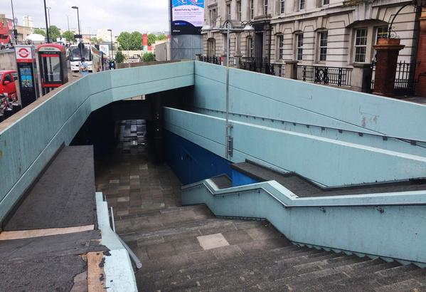
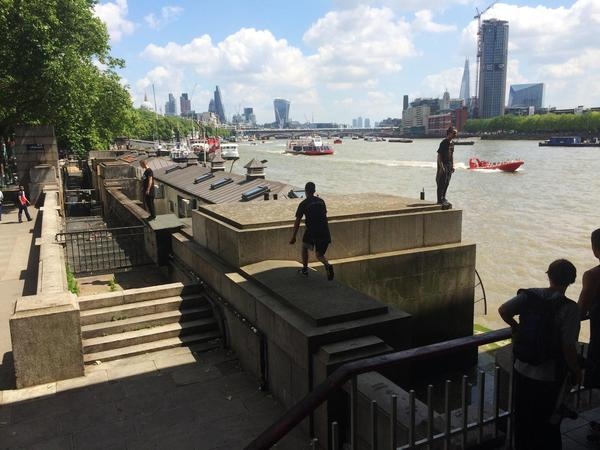
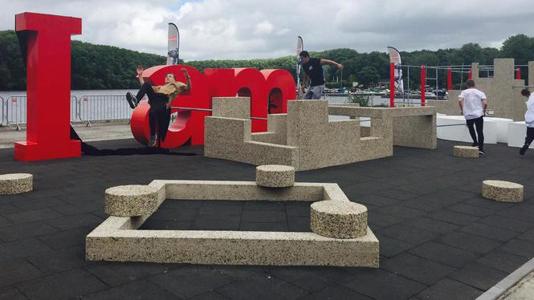
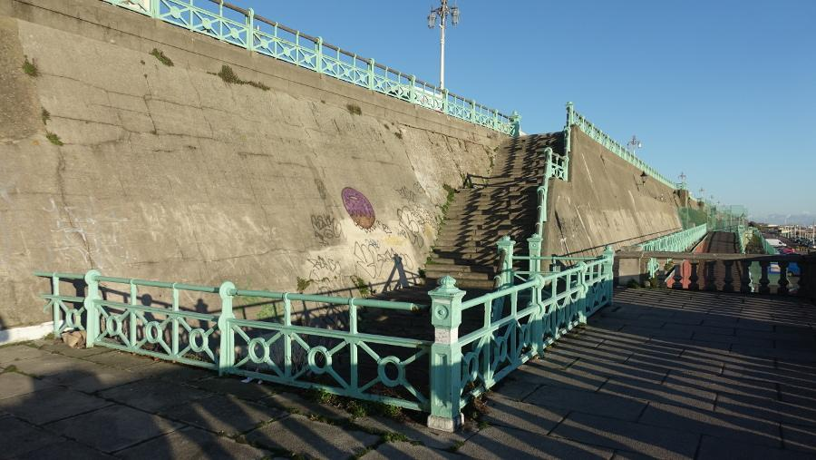
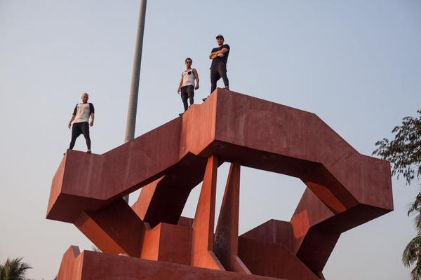

Parkour Spots
IMAX
 The most iconic spot of spots you will find in England. Locals claim that this is where the Double Kong Vault was invented by Queen Elizabeth after Britain won the war. Center of London jams and meeting point for freerunners from around the globe, the potential of this spot has been pushed for years. The perfect spot to run into some locals and kick off your day, this location is just a minute walk from Waterloo Station.
Tramp's Kitchen
 Walking across the Waterloo Bridge right from the Festival Pier and Stone Circle brings you to this oldschool spot. Hidden underneath Waterloo bridge you'll find the iconic "Baby 45"-Gap. Home of many jams and session, especially on rainy days (it is London in the end).
Sloterpark
 The biggest outdoor free-running and parkour track in the Netherlands was inaugurated on 11 July 2016 on the banks of the Sloterplas, a lake in Amsterdam’s Nieuw West district. The parkour track was opened by Achmed Baâdoud (chairman of the Nieuw West district committee), Ronald Mauer (Nieuw West district committee member responsible for Sports and Sloterplas) and Frans van der Avert (Amsterdam Marketing CEO). The parkour and the physical link with ‘I amsterdam’, the motto of the city and its residents, fits in with Amsterdam’s desire to present itself as a modern city.
Church Spot
This spot is in between the Yellow Walls spot and Stadhuisplein spot. it's a fun spot for some challenges, but the walls are kind off slippy so make sure your Tech is on point!
‘SUICIDE WALL’
 Suicide Wall is less of a spot, and more of a challenge. It’s a very popular one though, and something every brave traceur should take a look at! The challenge is to wallrun over the railing and then over the entire stair set, landing on the other side. I believe Chris Brooks was one of the first people to successfully complete it, and more recently the trend has been to try it in the other direction - a much harder feat for the reduced runup and higher consequence for failure! It's located near the Brighton Pier, just a little further east.
The Labyrinth
 An ambitious playground-project and accidental dream-spot. Located right by the beach in between palm-trees we love the tranquil vibe you feel when sessioning this area. The red walls and odd angles offer thousands of interesting lines and combinations.